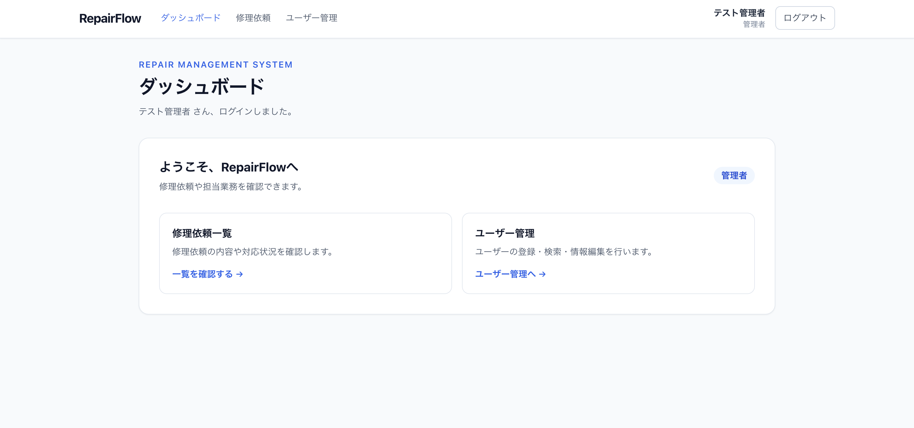
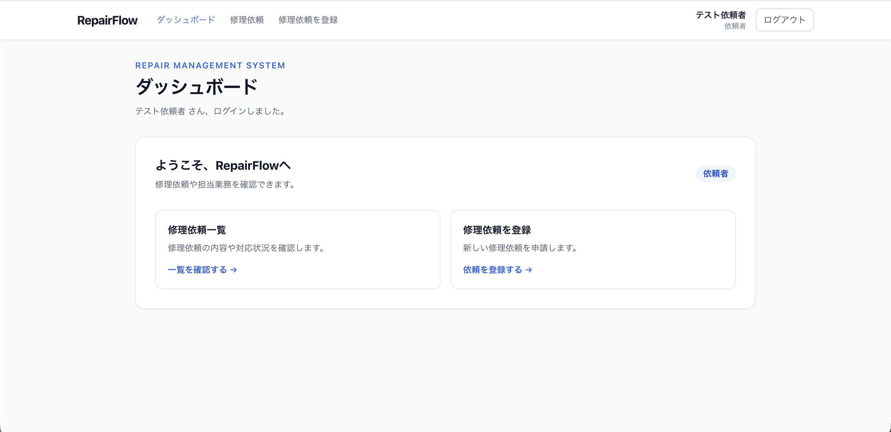
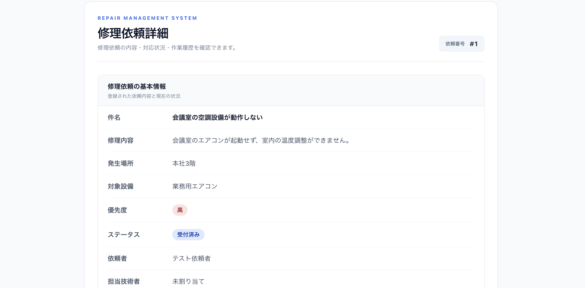
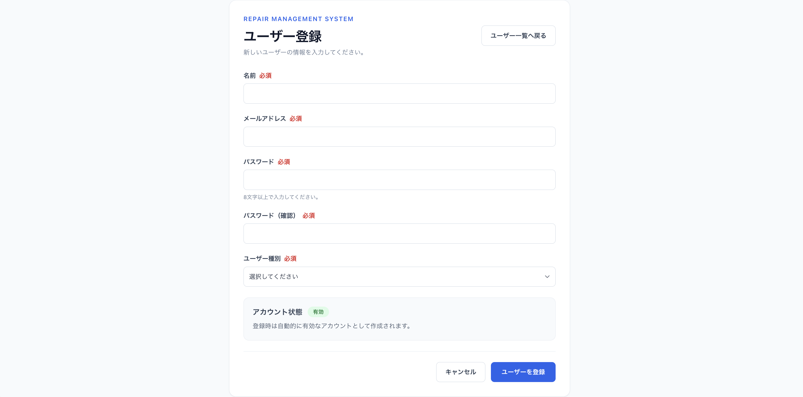
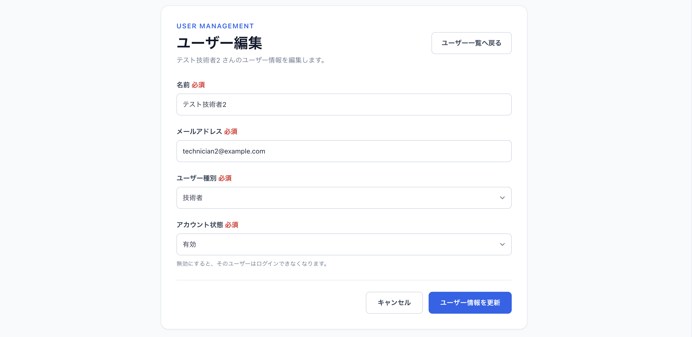

MAIN PROJECT
RepairFlow
修理依頼・進捗管理システム
修理依頼の受付から担当者の割り当て、 対応履歴の管理までを一元化するWebアプリケーション。 依頼者・技術者・管理者の役割に応じた機能を備え、 修理業務の流れを効率的に管理できる仕組みを構築しました。
デモ環境ログイン情報
- メールアドレス
- demo@example.com
- パスワード
- requester
※デモ用の共有アカウントです。登録済みの架空データを使って操作をお試しいただけます。 他の利用者も同じアカウントを使用するため、入力内容には個人情報を含めないでください。

Application Screens
役割に応じた画面と、修理業務を支える管理機能。




Overview
修理依頼の受付・担当者の割り当て・進捗管理・対応履歴を 一元管理することを目的に開発。 利用者ごとの権限と業務ルールを整理し、 安全性と保守性を意識した設計を行いました。
Key Features
- 依頼者： 修理依頼の登録、進捗確認、キャンセル申請
- 技術者： 担当依頼の確認、対応状況の更新、作業履歴の記録
- 管理者： ユーザー管理、担当者の割り当て、キャンセル申請の審査
Technical Highlights
- 権限管理： Policyを利用し、役割や所有者に応じたアクセス制御を実装
- 入力検証： FormRequestでバリデーションと認可の責務を整理
- データ整合性： トランザクションと行ロックを利用した更新処理を実装
- 品質管理： Feature Testによる業務ルールや権限制御の動作確認
Tech Stack
- PHP 8.3
- Laravel 10
- MySQL 8.4
- Tailwind CSS 3
- JavaScript
- Docker / Laravel Sail
- Render